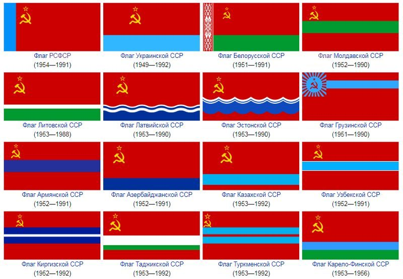

Союз Советских Социалистических Республик
СССР (союз советских социалистических республик) данная форма государственности пришла на смену Российской Империи. Страной стал править пролетариат, который добился этого права путем совершения октябрьской революции, явившейся ни чем иным, как вооруженным переворотом в пределах страны, увязшей в своих внутренних и внешних проблемах. Не последнюю роль в таком положении дел сыграл Николай 2, который фактически вогнал страну в состояние краха
Образование СССР произошло 7 ноября 1917 года по новому стилю. Именно в этот день случилась Октябрьская Революция, которая свергла Временное правительство и плоды февральской революции, провозгласив лозунг о том, что власть должна принадлежать рабочим. Так образовался СССР, Союз Советских Социалистических Республик. Однозначно оценивать советский период истории России крайне сложно, поскольку он был весьма противоречивым. Без сомнения можно сказать о том, что в это время были, как положительные, так и отрицательные моменты.
Основы могущества и процветания СССР связаны с тем, что в стране была относительная стабильность в руководстве. Была четка единая линия партии, и руководители, долго находившиеся во главе государства. Интересно, что чем ближе страна подходила к развалу, тем чаще менялись Генсеки. В начале 80-х годов и вовсе началась чехарда: Андропов, Устинов, Черненко, Горбачев – страна не успевала привыкнуть к одному руководителю, как на его месте оказывался другой. Общий список руководителей следующий:
Интересен также другой факт – наилучшими правителями были те, кто застал время революции и войны. Это же касается и партийных деятелей. Эти люди понимали цену социалистического государства, значимость и сложность его существования. Как только к власти пришли людей, которые ни войны, ни уже тем более революции, не видели – все пошло прахом.
Каждое десятилетие советская страна демонстрировала прирост населения. И это несмотря на многомиллионные жертвы Второй мировой войны. Залогом увеличения рождаемости были социальные гарантии государства. Ниже на диаграмме представлены данные по численности населения СССР в целом и РСФСР в частности.
Также следует обратить внимание на динамику развития городов. Советский союз становился индустриальной, промышленной страной, население которого постепенно переходило из деревни в города.
К моменту образования СССР в России было 2 города миллионника (Москва и Питер). К моменту распада страны таких городов уже было 12: Москва, Ленинград Новосибирск, Екатеринбург, Нижний Новгород, Самара, Омск, Казань, Челябинск, Ростов-на-Дону, Уфа и Пермь. В союзных республиках также были города с миллионным населением: Киев, Ташкент, Баку, Харьков, Тбилиси, Ереван, Днепропетровск, Одесса, Донецк.
Новый период развития страны был обусловлен тем, что в рамках единого государства СССР существовало несколько республик. Так, Союз советских социалистических республик имел следующий состав: Российская ССР, Украинская ССР, Белорусская ССР, Молдавская ССР, Узбекская ССР, Казахская ССР, Грузинская ССР, Азербайджанская ССР, Литовская ССР, Латвийская ССР, Киргизская ССР, Таджикская ССР, Армянская ССР, Туркменская ССР, Эстонская ССР.
